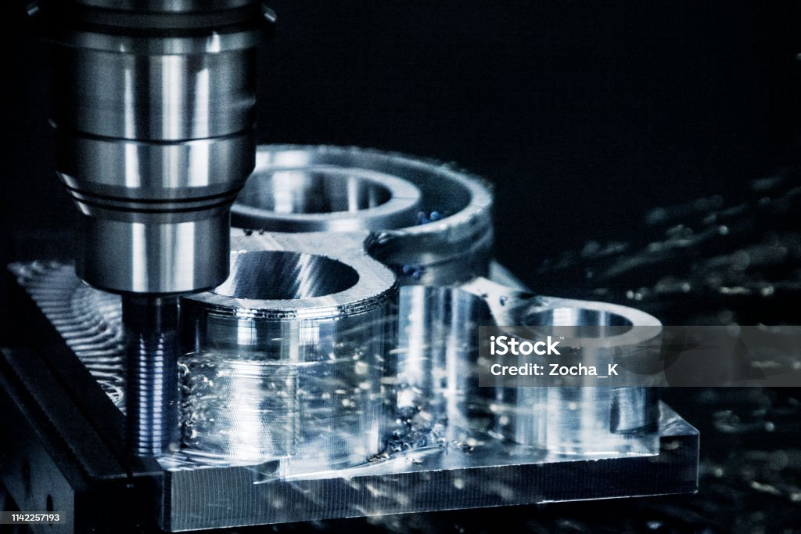

Unsere Leistungen

CNC-Fertigung
Hochpräzise 3/5-Achs-Zerspanung für Einzelteile & Serien, µm-genau mit modernen Steuerungen & Spanntechnik.

CAD/CAM Entwicklung
Von der Idee zur Fertigung: 3D-Konstruktion, Simulationsprüfung, CAM-Programmierung & Integration in den Workflow.

Systemmontage
Komplette Baugruppenmontage inkl. Prüfung, Dokumentation & Verpackung – ESD- & ISO-konform.
Engineering & Beratung
Optimierung von Konstruktion & Fertigung, Werkstoffauswahl, Bauteilanalyse, Kostenreduktion – direkt durch Ingenieure.
Rapid Prototyping
Kurze Durchlaufzeiten für erste Funktionsmuster – von 3D-Modell bis gefrästem Einzelstück innerhalb weniger Tage.
Qualitätssicherung
ISO-gerechte Prüfverfahren, Messprotokolle, CMM-Messtechnik, Werkstoffzertifikate & Rückverfolgbarkeit serienmäßig.